2130A10 automatic transmission - r + r
- Path
- Procedures > 21 GEARBOX > 2130 AUTOMATIC TRANSMISSION AND DIFFERENTIAL > 2130A automatic transmission assembly > 2130A10 automatic transmission - r + r
- Kind
- repair procedure (removal / refitting; the operation number is the code)
- Applies to
- engines: 2.5 V6; all production periods
- Interactive page
- https://sloeber94.github.io/elrnDB-a156/en/#/3237985
Applies to: engines: 2.5 V6; all production periods; only with equipment: Q-System
 Removing
Removing
 Refitting
RefittingPosition the vehicle on the ramp.
Ensure that the ignition key is in OFF position, then disconnect the negative battery terminal.
 | Name | Connector |
|---|---|---|
- | Battery |
4450B12 front or rear wheels (two) - r+r .
7055B54 under-engine guard - r r .
7055A43 central front grille - r r .
7055A41 RIGHT FRONT GRILLE - R.R. (Left and right).
7055B42 Additional FRONT WHEEL ARCH (one), left or right - R.R. (Left).
1. Open the cover of the 'maxi-fuse' box.
2. Disconnect the starter motor supply connector from the 'maxi-fuse' box.
3. Disconnect the earth lead from the 'maxi-fuse' box.
4. Undo the bolts securing the 'maxi-fuse' box to the battery.
5. Undo the bolt securing the battery's (+) terminal.
6. Disengage the 'maxi-fuse' box from the battery and move it aside.
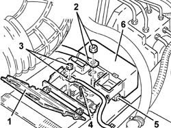
Applies to: engines: 2.5 V6; all production periods; only with equipment: Q-System
1. Disconnect the oil vapour recirculation pipe from the hose.
2. Loosen the bands and remove the rigid hose from the flow meter to the air chamber (2a) complete with hoses (2b).
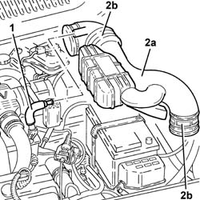
Applies to: engines: 2.5 V6; all production periods; only with equipment: Q-System
1. Undo the nut (1a) of the belt (1b) and remove the battery (1c).
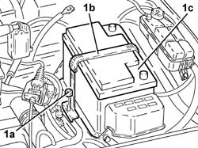
Applies to: engines: 2.5 V6; all production periods; only with equipment: Q-System
1. Remove the cover (1a) and disengage the relay mounting bracket (1b) from the battery cage.
2. Undo the bolts securing the battery cage to the air cleaner casing.
3. Undo the bolts (3a) securing the battery cage (3b) to the bodywork and remove it.
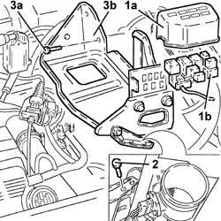
Applies to: engines: 2.5 V6; all production periods; only with equipment: Q-System
1. Disconnect the electrical connection of the gear selector.
| Name | Connector |
|---|---|---|
1 | Automatic transmission solenoid unit |
2. Disconnect the electrical connection from the gear selection solenoids assembly.
| Name | Connector |
|---|---|---|
2 | Automatic transmission solenoid unit |
3. Disconnect the battery/front connection.
| Name | Connector |
|---|---|---|
3 | Front / battery connection |
Disconnect the electrical connection of the speed sensors.
| Name | Connector |
|---|---|---|
- | Transmission sensor junction |
4. Disconnect the electrical connections (4a) and (4b) of the Lambda probes.
| Name | Connector |
|---|---|---|
4a | Lambda sensor |
| Name | Connector |
|---|---|---|
4b | Lambda sensor |
Disconnect the electrical connection from the air flow meter.
| Name | Connector |
|---|---|---|
- | Air flow meter |
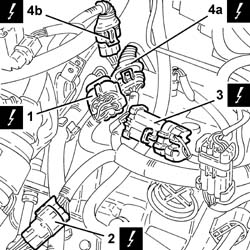
Applies to: engines: 2.5 V6; all production periods; only with equipment: Q-System
1. Undo the nut securing the gearbox oil level dipstick tube to the gear selector.
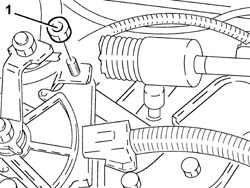
Applies to: engines: 2.5 V6; all production periods; only with equipment: Q-System
1. Remove the tube complete with gearbox oil level dipstick.
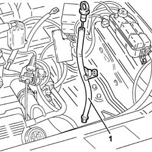
Applies to: engines: 2.5 V6; all production periods; only with equipment: Q-System
1. Undo the bolt (1a) and disconnect the earth lead (1b) from the left side panel.
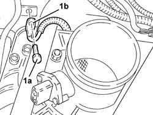
Applies to: engines: 2.5 V6; all production periods; only with equipment: Q-System
1. Undo the bolts securing the engine coolant tank to the bodywork.
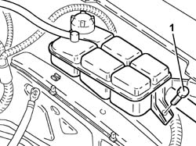
Applies to: engines: 2.5 V6; all production periods; only with equipment: Q-System
Disconnect the cold air intake from the air filter.
1. Remove the air filter (1a) complete with air flow meter (1b).
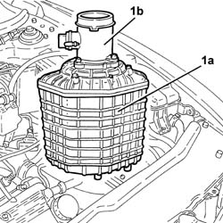
Applies to: engines: 2.5 V6; all production periods; only with equipment: Q-System
1. Undo the nut (1a) and disconnect the gear engagement cable (1b) from the gear selector lever.
2. Release the gear selector electrical wiring from the securing bands.
3. Undo the bolts (3a) and move aside the gear engagement cable mounting bracket (3b).
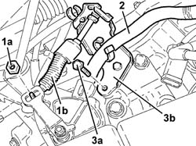
Applies to: engines: 2.5 V6; all production periods; only with equipment: Q-System
Undo the nuts and bolt, then move aside the heat shield protecting the coolant supply and return pipes to the climate control heater.
1. Undo the top bolts securing the gearbox to the engine block.
2. Recover the electrical connections mounting bracket.
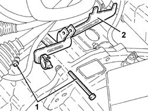
Applies to: engines: 2.5 V6; all production periods; only with equipment: Q-System
1. Remove the electrical connections top guard after disengaging it from the fuel vapour recirculation pipe.
2. Undo the retaining bolt and remove the electrical connections bottom guard.
3. Disconnect the oil vapour recirculation pipe from the air chamber.
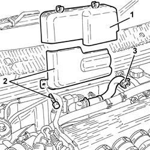
Applies to: engines: 2.5 V6; all production periods; only with equipment: Q-System
1. Undo the bolts (1a) and move aside the oil vapour separator (1b).
2. Slacken the bolt securing the rod to the power unit reaction rod mounting.
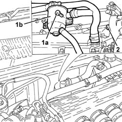
Applies to: engines: 2.5 V6; all production periods; only with equipment: Q-System
1. Undo the bolts securing the rigid coolant supply pipe to the engine oil heat exchanger.
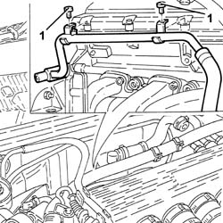
Applies to: engines: 2.5 V6; all production periods; only with equipment: Q-System
Undo the nuts securing the right cylinder head exhaust manifold.
1. Undo the plastic nuts (1a) and bolt (1b), then move aside the engine wiring (1c).
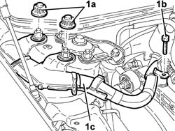
Applies to: engines: 2.5 V6; all production periods; only with equipment: Q-System
1. Fit onto the cylinder heads two suitable brackets for safely supporting the power unit.
2. Remove the front bumper right buffer.
3. Fit the tools (3a), (3b) and (3c) for safely supporting the power unit, and connect the rods to the brackets mounted previously.
 | Name | Country |
|---|---|---|
3a | Crossmember | 1.820.581.000 |
| Name | Country |
|---|---|---|
3b | Brackets | 1.870.651.000 |
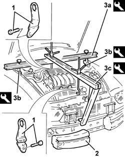
Applies to: engines: 2.5 V6; all production periods; only with equipment: Q-System
1. Undo the bolt on the exhaust pipe front rigid mounting.
2. Undo the nuts (2a) and remove the exhaust pipe from the left and right exhaust manifold (2b) complete with left cylinder head Lambda probe (2c).
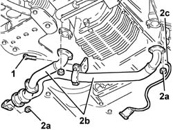
Applies to: engines: 2.5 V6; all production periods; only with equipment: Q-System
1. Undo the drain plug and drain the gearbox oil.
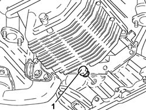
Applies to: engines: 2.5 V6; all production periods; only with equipment: Q-System
1. Disconnect the quick-release fittings of the delivery and return pipes to the gearbox oil cooling radiator.
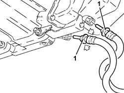
Applies to: engines: 2.5 V6; all production periods; only with equipment: Q-System
1. Undo the bolts (1a) and disconnect the right and left half shafts (1b).
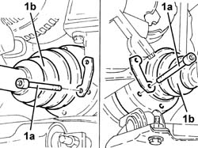
Applies to: engines: 2.5 V6; all production periods; only with equipment: Q-System
1. Working from the front left wheelarch, undo the bolt (1a) and remove the bracket (1b) securing the power steering pipes to the front suspension crossmember.
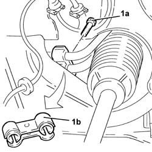
Applies to: engines: 2.5 V6; all production periods; only with equipment: Q-System
Position a hydraulic jack under the gearbox.
1. Undo the bolts (1a) and (1b), then remove the power unit rigid rear support (1c) complete with rubber block (1d).
2. Recover the exhaust pipe mounting bracket.
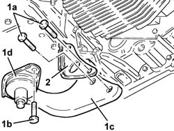
Applies to: engines: 2.5 V6; all production periods; only with equipment: Q-System
1. Undo the nuts (1a) and remove the heat shield from the power steering box (1b).
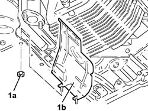
Applies to: engines: 2.5 V6; all production periods; only with equipment: Q-System
1. Remove the clips securing the brake calipers to the mounting brackets.
2. Disconnect the electrical connection from the right brake pad wear sensor.
| Name | Connector |
|---|---|---|
2 | Right brake pad wear sensor (switch) |
3. Undo the bolts securing the front brake calipers to their mounting brackets.
4. Release the front brake caliper flexible pipes from the mounting brackets.
5. Remove the front brake calipers and attach them to the front suspension springs so they do not hinder future operations.
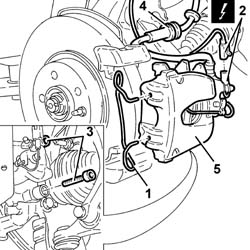
Applies to: engines: 2.5 V6; all production periods; only with equipment: Q-System
1. Undo the bolts (1a) and remove the ABS front active sensors (1b) from their seats on the steering knuckles.
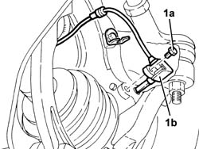
Applies to: engines: 2.5 V6; all production periods; only with equipment: Q-System
1. Undo the nuts (1a) securing the front anti-roll bar joints (1b) to the forks securing the shock absorbers to the lower track control arms.
2. Undo the bolts securing the shock absorber forks to the lower track control arms, shock absorber side.
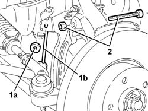
Applies to: engines: 2.5 V6; all production periods; only with equipment: Q-System
1. Undo the nuts (1a) and disconnect the track rods (1b) from the steering knuckles using the tool (1c).
| Name | Country |
|---|---|---|
1c | Extractor | 1.821.169.000 |
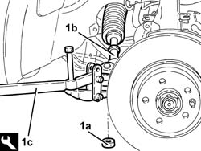
Applies to: engines: 2.5 V6; all production periods; only with equipment: Q-System
1. Undo nuts (1a) and disconnect upper track control arms (1b) from the steering knuckles using tool (1c).
| Name | Country |
|---|---|---|
1c | Extractor | 1.821.169.000 |
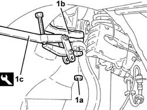
Applies to: engines: 2.5 V6; all production periods; only with equipment: Q-System
1. Undo the front nuts securing the mounting for the gear control levers and handbrake.
2. Recover the plates.
3. Undo the rear bolts (3a) and undo the remaining bolts (3b) securing the gear control levers and handbrake mounting.
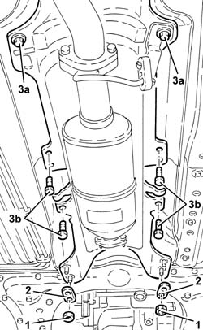
Applies to: engines: 2.5 V6; all production periods; only with equipment: Q-System
1. Support the front suspension crossmember using a hydraulic jack fitted with a suitable flange.
2. Undo the bolts securing the power steering box to the front suspension crossmember.
3. Undo the rear bolts (3a) and side bolts (3b) securing the front suspension crossmember to the bodyshell.
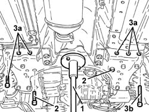
Applies to: engines: 2.5 V6; all production periods; only with equipment: Q-System
1. Lower the hydraulic jack and remove the complete front suspension crossmember.
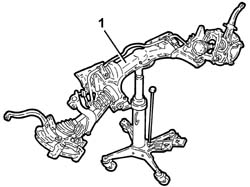
Applies to: engines: 2.5 V6; all production periods; only with equipment: Q-System
1. Undo the bolts (1a) and remove the intermediate drive shaft (1b).
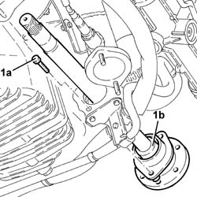
Applies to: engines: 2.5 V6; all production periods; only with equipment: Q-System
1. Remove the engine oil filter using a suitable tool.
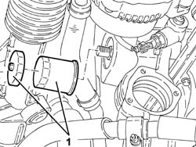
Applies to: engines: 2.5 V6; all production periods; only with equipment: Q-System
Withdraw the right cylinder head Lambda probe electrical wiring from the cable pass in the heat shield.
1. Remove the right cylinder head exhaust manifold (1a) complete with heat shield (1b) and Lambda probe (1c).
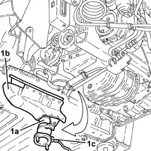
Applies to: engines: 2.5 V6; all production periods; only with equipment: Q-System
1. Release the electrical wiring for the starter motor and alternator from the securing bands.
2. Undo the bolt (2a) and remove the mounting bracket (2b) for the alternator wiring.
3. Undo the starter motor retaining bolts.
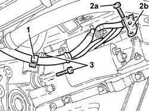
Applies to: engines: 2.5 V6; all production periods; only with equipment: Q-System
1. Undo the bolts (1a) and remove the lower engine flywheel protection (1b).
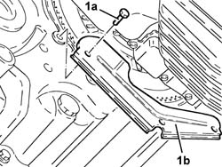
Applies to: engines: 2.5 V6; all production periods; only with equipment: Q-System
1. Undo the bolts (1a) and remove the engine rpm and timing sensor protection (1b).
2. Move aside the mounting (2a) complete with rpm and timing sensor (2b).
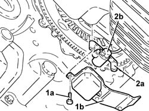
Applies to: engines: 2.5 V6; all production periods; only with equipment: Q-System
1. Rotate the crankshaft to gain access to the bolts securing the flywheel to the torque converter, turning the nut securing the engine pulley.
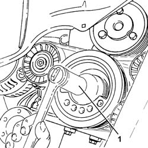
Applies to: engines: 2.5 V6; all production periods; only with equipment: Q-System
1. Fit the flywheel lock.
| Name | Country |
|---|---|---|
1 | Counter-torque | 1.860.771.000 |
2. Undo the accessible bolts securing the flywheel to the torque converter.
Repeat the above operations for the remaining bolts.
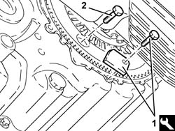
Applies to: engines: 2.5 V6; all production periods; only with equipment: Q-System
1. Position the flywheel as shown in the figure to avoid interference during fitting of the torque converter locking tool.
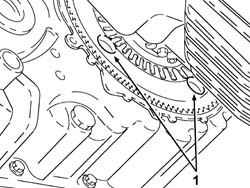
Applies to: engines: 2.5 V6; all production periods; only with equipment: Q-System
Position a hydraulic jack under the gearbox.
1. Undo the nut on the bolt fixing the gearbox side power unit rigid support to the flexible block.
2. Undo the bolts fixing the gearbox side power unit rigid support to the bodyshell.
3. Using the hydraulic jack, lower the gearbox as far as necessary, then withdraw the bolt (3a) and remove the flexible block of the gearbox side power unit rigid support (3b).
Remove the hydraulic jack from under the gearbox.
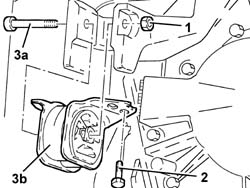
Applies to: engines: 2.5 V6; all production periods; only with equipment: Q-System
1. Undo the bolts (1a) and remove the gearbox side rigid power unit support (1b).
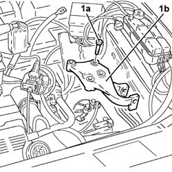
Applies to: engines: 2.5 V6; all production periods; only with equipment: Q-System
1. Fit the torque converter locking tool.
| Name | Country |
|---|---|---|
1 | Clip | 1.870.756.000 |
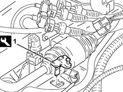
Applies to: engines: 2.5 V6; all production periods; only with equipment: Q-System
1. Undo the bolt (1a) securing the rpm and timing sensor wiring mounting bracket (1b).
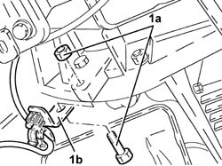
Applies to: engines: 2.5 V6; all production periods; only with equipment: Q-System
1. Position on a hydraulic jack the tool to be used for removing the gearbox.
| Name | Country |
|---|---|---|
1 | Bracket | 1.870.746.000 |
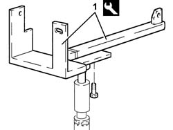
Applies to: engines: 2.5 V6; all production periods; only with equipment: Q-System
1. Position the tools thus assembled under the gearbox and secure them.
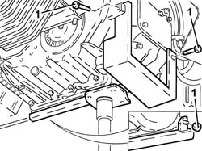
Applies to: engines: 2.5 V6; all production periods; only with equipment: Q-System
1. Undo the remaining bolts securing the gearbox to the engine.
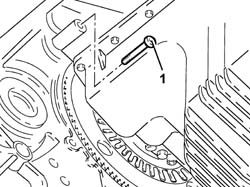
Applies to: engines: 2.5 V6; all production periods; only with equipment: Q-System
1. Lower the hydraulic jack and remove the gearbox.
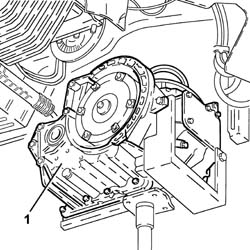
Applies to: engines: 2.5 V6; all production periods; only with equipment: Q-System
Refitting
RemovingRefit the gearbox in its housing using the hydraulic jack.
Tighten the gearbox bolts to the specified torque.
 | Fastening | Component | Ø | Value (daNm) |
|---|---|---|---|---|
- | Bolt | AUTO TRANSMISSION | M10 | (Engine side) 3.7 - 4.5 |
Remove the tool used to refit the gearbox and return it to its place.
| Name | Country |
|---|---|---|
- | Bracket | 1.870.746.000 |
Refit the rpm and timing sensor wiring mounting bracket in its seating and secure it with its bolt.
Remove the torque converter locking tool.
| Name | Country |
|---|---|---|
- | Clip | 1.870.756.000 |
1. Refit the gearbox side power unit rigid support (1a) in its seating and tighten the bolts (1b) to the specified torque.
| Fastening | Component | Ø | Value (daNm) |
|---|---|---|---|---|
1b | Bolt | POWER UNIT GEAR BOX END RIGID MOUNT | M12 | (Automatic transmission side) 6.4 - 7.9 |
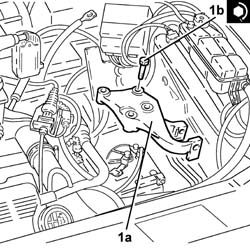
Applies to: engines: 2.5 V6; all production periods; only with equipment: Q-System
Place a hydraulic jack under the gearbox.
1. Refit the flexible block on the gearbox side power unit rigid support (1a) and tighten the bolt (1b) and bolts (1c) to the specified torque.
| Fastening | Component | Ø | Value (daNm) |
|---|---|---|---|---|
1b | Bolt | POWER UNIT GEAR BOX END RIGID MOUNT | - | (Flexible mounting side) - |
| Fastening | Component | Ø | Value (daNm) |
|---|---|---|---|---|
1c | Bolt | GEARBOX SIDE RUBBER MOUNT | M8 | (Bodyshell side) 3.0 - 3.7 |
Applies to: engines: 2.5 V6; all production periods; only with equipment: Q-System
Rotate the crankshaft to gain access to the seats of the bolts securing the torque converter to the flywheel, turning the engine pulley nut.
1. Fit the flywheel lock.
| Name | Country |
|---|---|---|
1 | Counter-torque | 1.860.771.000 |
2. Tighten the accessible bolts securing the torque converter to the flywheel to the specified torque.
| Fastening | Component | Ø | Value (daNm) |
|---|---|---|---|---|
2 | Bolt | AUTO TRANSMISSION TORQUE CONVERTER | M8 | (Engine flywheel side) 3.0 - 3.4 |
Repeat the above operations for the remaining bolts.
Applies to: engines: 2.5 V6; all production periods; only with equipment: Q-System
Refit the mounting complete with rpm and timing sensor in its seating and fix it with its bolts.
Refit the rpm and timing sensor protection in its seating and fix it with its bolts.
Refit the lower engine flywheel protection in its seating and fix it using the bolts.
1. Refit the starter motor in its housing and fix it tightening the bolts to the recommended torque.
| Fastening | Component | Ø | Value (daNm) |
|---|---|---|---|---|
1 | Bolt | STARTER MOTOR | M8 | Gearbox side 2.3 - 2.8 |
2. Refit the alternator electrical wiring mounting bracket (2a) in its seating and tighten the bolt (2b).
3. Fix the electrical wiring for the starter motor and alternator to the securing bands.
Applies to: engines: 2.5 V6; all production periods; only with equipment: Q-System
Refit in its seating the right cylinder head exhaust manifold complete with heat shield and Lambda probe.
Refit the right cylinder head Lambda probe electrical wiring in its seating, and pass it through the cable pass in the heat shield.
Refit the engine oil filter in its seating and tighten it fully by hand.
Refit the intermediate half shaft in its seating and tighten its bolts to the specified torque.
| Fastening | Component | Ø | Value (daNm) |
|---|---|---|---|---|
- | Bolt | INTERMEDIATE DRIVE SHAFT | M8 | (Support side) 2.5 ÷ 2.8 |
Refit in its seating the complete suspension crossmember, using the hydraulic jack.
1. Tighten the rear bolts (1a) and (1b) securing the front suspension crossmember to the bodyshell to the recommended torque.
| Fastening | Component | Ø | Value (daNm) |
|---|---|---|---|---|
1a | Rear bolts | ENGINE OR ROD ANCHORAGE BEAM | M12 | (Bodyshell side) 10.8 ÷ 13.2 |
| Fastening | Component | Ø | Value (daNm) |
|---|---|---|---|---|
1b | Rear bolt | ENGINE OR ROD ANCHORAGE BEAM | M10 | (Bodyshell side) 8.1 ÷ 9.9 |
2. Tighten the side bolts securing the front suspension crossmember to the bodyshell to the recommended torque.
| Fastening | Component | Ø | Value (daNm) |
|---|---|---|---|---|
2 | Side bolt | ENGINE OR ROD ANCHORAGE BEAM | M12 | (Bodyshell side) 10.8 ÷ 13.2 |
3. Tighten the bolts securing the power steering box to the front suspension crossmember to the specified torque.
| Fastening | Component | Ø | Value (daNm) |
|---|---|---|---|---|
3 | Bolt | POWER STEERING BOX | M14 | (Front suspension crossmember side) 11.0 - 13.6 |
4. Remove the hydraulic jack, complete with front suspension crossmember mounting bracket.
Applies to: engines: 2.5 V6; all production periods; only with equipment: Q-System
Tighten the bolts fixing the gearbox levers and handbrake mounting.
Refit the plates in their seats and tighten the nuts securing the gearbox levers and handbrake mounting.
1. Connect the upper track control arms (1a) to the steering knuckles and tighten the nuts (1b) to the specified torque.
| Fastening | Component | Ø | Value (daNm) |
|---|---|---|---|---|
1b | Nut | FRONT SUSPENSION TOP LEVER | M10 | (Wheel damper side) 4.3 - 4.7 |
Applies to: engines: 2.5 V6; all production periods; only with equipment: Q-System
1. Connect the tie-rods (1a) to the steering knuckles and tighten the nuts (1b) to the specified torque.
| Fastening | Component | Ø | Value (daNm) |
|---|---|---|---|---|
1b | Nut | POWER STEERNG BOX LINKS | M10 | (Wheel damper side) 2.9 - 3.6 |
Applies to: engines: 2.5 V6; all production periods; only with equipment: Q-System
1. Tighten the bolts securing the forks connecting the shock absorbers to the lower track control arms, shock absorber side, to the recommended torque.
| Fastening | Component | Ø | Value (daNm) |
|---|---|---|---|---|
1 | Bolt | FRONT DAMPER FORK ON WISHBONE | M12 | (Shock absorber side) 8.1 - 8.9 |
2. Tighten to torque the nuts (2a) securing the front anti-roll bar joints (2b) to the forks connecting the shock absorbers to the lower track control arms.
| Fastening | Component | Ø | Value (daNm) |
|---|---|---|---|---|
2a | Nut | FRONT ANTI-ROLL BAR JOINTS | M10 | 3.8 - 4.7 |
Applies to: engines: 2.5 V6; all production periods; only with equipment: Q-System
Refit the ABS front active sensors in their seatings on the steering knuckles and tighten their bolts.
1. Refit the front brake calipers (1a) in their seatings and fix them to the mounting brackets tightening the bolts (1b) to the specified torque.
| Fastening | Component | Ø | Value (daNm) |
|---|---|---|---|---|
1b | Bolt | FRONT BRAKE CALIPER ASSEMBLY | M10 | (Bracket side) 4.8 - 5.2 |
2. Fix the flexible pipes to the front brake calipers to their mounting brackets.
3. Connect the electrical connection for the right brake pad wear sensor.
4. Refit in their seats the clips securing the brake calipers to their mounting brackets.
Applies to: engines: 2.5 V6; all production periods; only with equipment: Q-System
Refit the power steering box heat shield in its seat and tighten its nuts.
1. Refit in its seat the power unit rear rigid support (1a) complete with flexible block (1b) and exhaust pipe mounting bracket (1c).
2. Tighten the bolts securing the power unit rear rigid support to the gearbox to the recommended torque.
| Fastening | Component | Ø | Value (daNm) |
|---|---|---|---|---|
2 | Bolt | POWER UNIT RIGID REAR MOUNT | M16 | Gearbox side 10.2 - 12.6 |
3. Tighten the bolts securing the flexible block of the power unit rear rigid support to the recommended torque.
| Fastening | Component | Ø | Value (daNm) |
|---|---|---|---|---|
3 | Bolt | INTERM RUBBER MOUNT | M8 | (Front suspension crossmember side) 3.0 - 3.7 |
Applies to: engines: 2.5 V6; all production periods; only with equipment: Q-System
Working from the front left wheelarch, refit in its seating the bracket securing the power steering pipes to the front suspension crossmember and fix it with its bolt.
1. Connect the right and left half shafts (1a) and tighten their bolts (1b) to the specified torque.
| Fastening | Component | Ø | Value (daNm) |
|---|---|---|---|---|
1b | Bolt | FRONT DRIVE SHAFT COMPLETE WITH JOINTS | M10 | (Intermediate. driveshaft/ differential. internal. driveshaft side.) 4.0 - 5.2 |
Applies to: engines: 2.5 V6; all production periods; only with equipment: Q-System
Connect the quick-release connectors on the supply and return pipes to the gearbox oil cooling radiator.
Tighten the gearbox oil drain plug to the specified torque.
| Fastening | Component | Ø | Value (daNm) |
|---|---|---|---|---|
- | - | AUTO TRANSMISSION PLUGS | - | 2.3 - 5.5 |
Refit in its seating the exhaust pipe from the left and right exhaust manifold complete with left cylinder head Lambda probe and fix it using the nuts.
Tighten the bolts securing the exhaust pipe front rigid mounting.
Remove the safety tools for supporting the power unit.
| Name | Country |
|---|---|---|
- | Crossmember | 1.820.581.000 |
| Name | Country |
|---|---|---|
- | Brackets | 1.870.651.000 |
Refit the front bumper right buffer in its seat.
Remove from the cylinder heads the safety brackets used for supporting the power unit.
Refit the engine wiring in its seating and secure it with its bolt and plastic nuts.
Tighten the nuts securing the exhaust manifold to the right cylinder head to the specified torque.
| Fastening | Component | Ø | Value (daNm) |
|---|---|---|---|---|
- | Nut | EXHAUST MANIFOLD/S | M8 | (Cylinder head side) 1.9 - 2.3 |
Tighten the bolts securing the rigid coolant supply pipe to the engine oil heat exchanger.
Place the oil vapour separator back in its housing and fix it using the bolts.
Tighten the bolt securing the rod to the power unit reaction rod support.
Connect the oil vapour recirculation pipe to the air chamber.
Refit in its seating the lower electrical wiring guard and fix it with its bolt.
Refit in its seating the upper electrical wiring guard and attach the fuel vapour recirculation pipe to it.
Refit in its seating the heat shield for the coolant supply and return pipes to the climate control system heater, and secure it with the nuts and bolt.
Check that the gear control lever is in the D position.
1. Check that the gear selector is in the D position, by lining up the lug (1a) with the mark (1b) on the gear selector.
Applies to: engines: 2.5 V6; all production periods; only with equipment: Q-System
1. Refit in its seating the gear engagement cable mounting bracket (1a) and fix it with the bolts (1b).
2. Fix the gear selector electrical wiring using the bands.
3. Connect the gear engagement cable (3a) to the selector lever and tighten the nut (3b) to the specified torque.
| Fastening | Component | Ø | Value (daNm) |
|---|---|---|---|---|
3b | Nut | GEAR ENGAGEMENT CABLE | - | (Gear selector side) |
Check that all the gears engage correctly and engage position P.
Applies to: engines: 2.5 V6; all production periods; only with equipment: Q-System
Replace the air filter, complete with air flow meter, in its housing.
Connect the cold air intake to the air filter.
Tighten the bolts securing the coolant supply tank to the bodyshell.
Connect the earth lead to the bodyshell left wing.
Refit in its seating the tube complete with gearbox oil level dipstick and tighten its nut.
Connect the electrical connection to the air flow meter.
Connect the Lambda probe electrical connections.
Connect the speed sensor electrical connections.
Connect the battery/front connection.
Connect the electrical connection for the gear selection solenoids assembly.
Connect the gear selector electrical connection.
Refit the battery cage in its seating and fix it with its bolts.
Fix the relay mounting bracket to the battery cage and fit the cover.
Refit the battery in its housing and fix it with its belt.
Refit in its seating the rigid hose from the flow meter to the air chamber complete with hoses, and tighten the bands.
Connect the oil vapour recirculation pipe to the hose.
Refit the maxi-fuse box in its seating on the battery.
Tighten the bolt securing the battery's (+) terminal.
Tighten the bolts securing the maxi-fuse box to the battery.
Connect the earth lead to the maxi-fuse box.
Connect the starter motor supply connector to the maxi-fuse box.
Close the maxi-fuse box cover.
2130A04 Automatic transmission FLUID - Check level and top up, .if necessary .
7055B42 Additional FRONT WHEEL ARCH (one), left or right - R.R. (Left).
7055A41 RIGHT FRONT GRILLE - R.R. (Left and right).
7055A43 central front grille - r r .
7055B54 under-engine guard - r r .
4450B12 front or rear wheels (two) - r+r .
Connect the negative (-) battery terminal.
2130A04 Automatic transmission FLUID - Check level and top up, .if necessary .
Topics linked from this page (16)
- 2130A04 Automatic transmission FLUID - Check level and top up, .if necessary
- 4450B12 front or rear wheels (two) - r+r
- 7055A41 RIGHT FRONT GRILLE - R.R.
- 7055A43 central front grille - r r
- 7055B10 Front BUMPER - R.R.
- 7055B42 Additional FRONT WHEEL ARCH (one), left or right - R.R.
- 7055B54 under-engine guard - r r
- A1B Battery ( BATTERY NEGATIVE )
- D3 Front / battery connection
- D79 Transmission sensor junction
- K21 Right brake pad wear sensor (switch)
- K39 Lambda sensor
- K40 Lambda sensor
- K41 Air flow meter ( ENGINE )
- L50A Automatic transmission solenoid unit ( ABS )
- L50B Automatic transmission solenoid unit ( ABS )